Maxwell Genealogy
Research Summary & Source Document Inventory · May 2026
FTDNA Kit 752085 · David B. Maxwell & James D. Maxwell
I am James D. Maxwell, son of David B. Maxwell (FTDNA kit 752085). I have been conducting research, mostly using ScotlandsPeople, the Dumfries Register of Sasines, the Scottish Register of Deeds, Dumfries Commissary Court testaments, the Register of the Privy Council of Scotland (1684), FamilySearch, and the Book of Caerlaverock.
Based on Donald Maxwell's research placing kit 752085 on the James Maxwell of Auchincairn branch (brother of Sir John Maxwell of Cowhill), confirmed by Jennifer Maxwell's BigY analysis showing kit 752085 on R-FTA17177 rather than R-BY24084 (Sir John's line), I think I might be close to fully completing my line. New research in the Scottish Register of Deeds and Register of Sasines has now confirmed John Maxwell elder of Barfill (wife Constance Lindsay) and John Maxwell younger of Barfill (father of Patrick b.1690) as two distinct generations in the same 1672 sasine. The American chain is fully documented. One generational gap remains.
This page summarises the research and links to every original source image.
| # | Person | Dates & Place | Status | Source |
|---|---|---|---|---|
| 1 | Undwin, father of Maccus | ~1070, Roxburghshire | ✓ | FT-4 |
| 2–11 | Lords of Maxwell (~12 generations) | 1070–1484 | ✓ | FT-4 |
| 12 | John Maxwell, Master of Maxwell | d. Battle of Kirtle, 22 Jul 1484 | ✓ | FT-4 ★ Y2357 SNP · GD2 from Caerlaverock |
| 13 | Robert Maxwell of Cowhill (FTA17177) | ~1460–c1513 · XIII in our chain · XIV per Don's chart (counting from Robert Maxwell of Caerlaverock) | ✓ | FT-7 DNA-1 DNA-2 |
| 14 | James Maxwell of Auchincairn Son of Robert Maxwell of Cowhill · brother of Sir John Maxwell of Cowhill (BY24084 line) |
born ~1495–1510 · generation XIV per Don's chart · FTA17177 without BY24084 | ✓ DNA | DNA-1 DNA-2 Kit 752085 on R-FTA17177, not R-BY24084 (Sir John's line) — confirmed by Jennifer Maxwell's BigY analysis |
| 15 | Edward Maxwell of Auchincairn Wife: Rosina Wallace · Lands: Auchincairne, Quhytstanes (Whytestanes), Bukrig |
d. between 29 Jun 1604 and 22 Aug 1605 · son of James | ✓ | WILL-0 Named as deceased; minor sons William & Alexander in wardship; widow Rosina Wallace named; lands listed |
| 16 | Alexander Maxwell, Towbill-hill, Kirkmahoe — sole viable candidate William Maxwell (co-ward) traced to a collateral line not leading to Barfill — see WILL-1c Edward Maxwell of Isle not named in wardship clause — see note |
Alexander: d. Nov 1625 · Kirkmahoe | ✓ | WILL-1a (Alexander) ⭐ William Maxwell → Bankend, Caerlaverock (d.1656) → son Edward Maxwell married Dumfries 1671 — diverges from Barfill line. See WILL-1c. ⚠ Edward of Isle not in wardship clause; if Auchincairn-connected, must be adult son or unrelated. |
| 17 | John Maxwell, son of Alexander Maxwell | born ~1610–1625 · named as heir in testament | ✓ | WILL-1a |
|
↕ THE GAP — John Maxwell, son of Alexander (born ~1610–1625) → John Maxwell elder of Barfill (first documented 1662) ↕ No document names John elder's father · ages comfortable (John ~42–47 at Barfill 1662) · Alexander's other sons William and Thomas both traced to Dumfries lines — John is the sole remaining candidate |
||||
| 18 | John Maxwell elder of Barfill, Holywood Wife: Constance (a Lindsay) |
active 1662–1677 · Holywood parish / Kirkcudbright property | ✓ | DEED-1 (1662) · DEED-2 (1664 Tack) · DEED-3 (1667) · SASE-2 (1672 with younger & Constance) · SASE-3 |
| 19 | John Maxwell younger of Barfill, Holywood Wife: Margaret daughter of John Thomson |
born ~1650–1658 · active 1672–1694 | ✓ | SASE-2 (same 1672 doc as elder) · OPR-B2 (father of Patrick 1690) |
| 20 | Patrick Maxwell | b. 14 Sep 1690 · Holywood · d. 23 Jan 1728 · Stirling Merchant and church elder in Stirling |
✓ | OPR-B2 ⭐ (birth) OPR-D1 (death) father: John Maxwell younger of Barfill · mother: Margaret dau. of John Thomson |
| 21 | John Maxwell | b. 25 May 1726 · Stirling · d. ~28 Jan 1787 · Stirling · age ~61 | ✓ | OPR-B1 (birth) OPR-D2 (burial) parents: Patrick Maxwell & Janet Burd |
| 22 | Adam Maxwell | b. 20 August 1749 · Stirling, Scotland | ✓ | OPR-B0 ⭐ Stirling Associate congregation · parents: John Maxwell & Mary Finlayson |
| 23 | David Maxwell | b. ~1798 · d. 1830, Armstrong Co., PA | ✓ | FT-1 FT-2 |
| 24 | Samuel H. Maxwell | b. 23 Feb 1833 Pennsylvania · m. Mary E. Dinsmore | ✓ | FT-1 |
| 25 | Mack Young Maxwell | b. 15 Jul 1864, Pike Co., Ohio · d. 8 Jun 1942 | ✓ | FT-1 |
| 26 | Ralph Edgar Maxwell | b. 7 Jan 1887, Jackson Co., Ohio · d. 23 Jan 1942 | ✓ | FT-1 |
| 27 | Ralph Davis Maxwell | b. ~1925, Ohio | ✓ | FT-1 |
| 28 | David B. Maxwell | Kit 752085 | ✓ | FTDNA |
| 29 | James D. Maxwell | Son of David B. Maxwell | ✓ | — |
BigY confirms the Auchincairn branch — R-FTA17177 vs R-BY24084. Jennifer Maxwell's BigY analysis (May 2026) places kit 752085 on R-FTA17177 (~1450 CE). The Broomholm ancient line kit sits on the child branch R-BY24084 (~1500 CE). Don's chart (DNA-1) explicitly labels FTA17177 as Robert Maxwell of Cowhill (XIV) and BY24084 as the mutation in Sir John Maxwell's line (XV, born 1500). Kit 752085 does not carry BY24084, meaning its ancestor was Robert's son who was Sir John's brother — James Maxwell of Auchincairn — confirming Don's prediction. The BigY was already complete; no upgrade needed.
John Maxwell elder and younger of Barfill — confirmed in one sasine. The Dumfries & Kirkcudbright Register of Sasines index (pp.264–265) shows both "John, of Barfill, elder" and "John, of Barfill, younger" recorded on the same date (8 May 1672) at the same folio (Vol.1, Fol.133). The Lindsay index (p.206) for the same document names Constance Lindsay as wife of the elder. Patrick's 1690 baptism (OPR-B2) gives Margaret Thomson as wife of John of Barfill. Two different wives = two different men. The younger (father of Patrick) is the son of the elder (husband of Constance).
John Maxwell elder at Barfill from at least 1662 — Kirkcudbright county throughout. Register of Deeds indexes (FamilySearch) show John of Barfill in bonds dated 1662 (Vol.4, pp.211, 874), a Tack in 1664 (Vol.11, p.941 — possibly the original lease), and a bond in 1667 (Dal., Vol.15, p.48). All 1662–1677 sasine entries carry Kirkcudbright county — consistent with Auchincairn origins, since Auchencairn is a Kirkcudbrightshire village. The 1694 sasine switches to Dumfries county, by which time only the younger remained.
Alexander Maxwell — confirmed as the sole viable candidate for the Barfill line. The wardship clause in WILL-0 names William and Alexander Maxwell as the minor sons of Edward of Auchincairn. Both named wards, and both of Alexander's sons, have now been traced to lines that diverge from Barfill. William Maxwell (Edward of Auchincairn's ward) is probably William Maxwell at Bankend, Caerlaverock (d.1656 — WILL-1c): his sole heir was Edward Maxwell, who married in Dumfries in 1671. Thomas Maxwell (Alexander's other son) appears to be the Thomas Maxwell who fathered a son Thomas in Dumfries in September 1644 (OPR-X1) — his line runs into Dumfries, not Holywood. With both collateral candidates accounted for, Alexander's son John stands as the sole remaining candidate whose line leads to Barfill. The direct identification of Alexander's son John with John Maxwell elder of Barfill gives comfortable ages throughout (John ~42–47 at Barfill in 1662), with no intermediate generation required. Edward Maxwell of Isle, Caerlaverock (d. July 1637) remains an outside possibility but is not named in the wardship clause.
"Barfie" is a misreading of "Barſill." In 17th-century Secretary hand the long ſ was misread as f. Three sources confirm the true name: Barfill (RPCS 1684 · SASE-2), Barshill (Hearth Tax 1691, correct), Barfie (OPR 1690, misread). The farm sits in Holywood parish between Hulton and Portrack.
The Stirling Associate congregation error on FamilySearch. Adam Maxwell's 1749 baptism is indexed as "Erskine, Renfrewshire" — wrong. The congregation was the Stirling Associate church in Stirling (CH3/559/17), founded 1733 by Rev. Ebenezer Erskine.
↕ one step · no document names parentage · ages perfectly consistent · Kirkcudbright links both
John Maxwell elder of Barfill (wife Constance Lindsay · active 1662–1677 · Kirkcudbright county)
Alexander's son John (born ~1615–1625) would be roughly 37–47 in 1662 when John elder first appears — exactly the right age for a man entering bonds and holding a farm tack. Both Alexander's family (Kirkmahoe) and the Barfill elder's sasines (Kirkcudbright county) share the Kirkcudbright geography consistent with the Auchincairn origin. No surviving deed or OPR record names John elder's father. The full text of the 1664 Tack (Vol.11, p.941) and the 1672 sasine (Vol.1, Fol.133) are the two most likely documents to bridge this gap and should be read in full at NRS.
- Thank you for confirming the BigY placement. The R-FTA17177 / R-BY24084 distinction, combined with Don's identification of FTA17177 as Robert Maxwell of Cowhill and BY24084 as Sir John's line, confirms the Auchincairn hypothesis definitively. We now have John Maxwell elder of Barfill (wife Constance Lindsay) and John Maxwell younger (father of Patrick 1690) confirmed as two distinct generations in the same 1672 sasine.
- Confirming the Auchincairn identification: The two testaments (Alexander Maxwell, Kirkmahoe, 1626; Edward Maxwell of Isle, Caerlaverock, 1638) fit the Auchincairn sons in timing and geography, but neither names its father. Does the Maxwell DNA group have any documentary source connecting Alexander or Edward Maxwell specifically to the Auchincairn line?
- Other Auchincairn-branch kits: Does any tested kit in Group 6.48 on the FTA17177 branch (not BY24084) trace through Kirkmahoe, Caerlaverock, or Holywood in the 17th century? A match would either close the gap or refine the chain.
- The 1664 Tack and 1672 Sasine: The full text of Register of Deeds Vol.11, p.941 (John of Barfill, Tack, 1664) and Dumfries Sasines Vol.1, Fol.133 (elder + younger + Constance Lindsay, 1672) are available at NRS. These are the most likely documents to name John elder's parentage. Has anyone in the Maxwell group already accessed these?
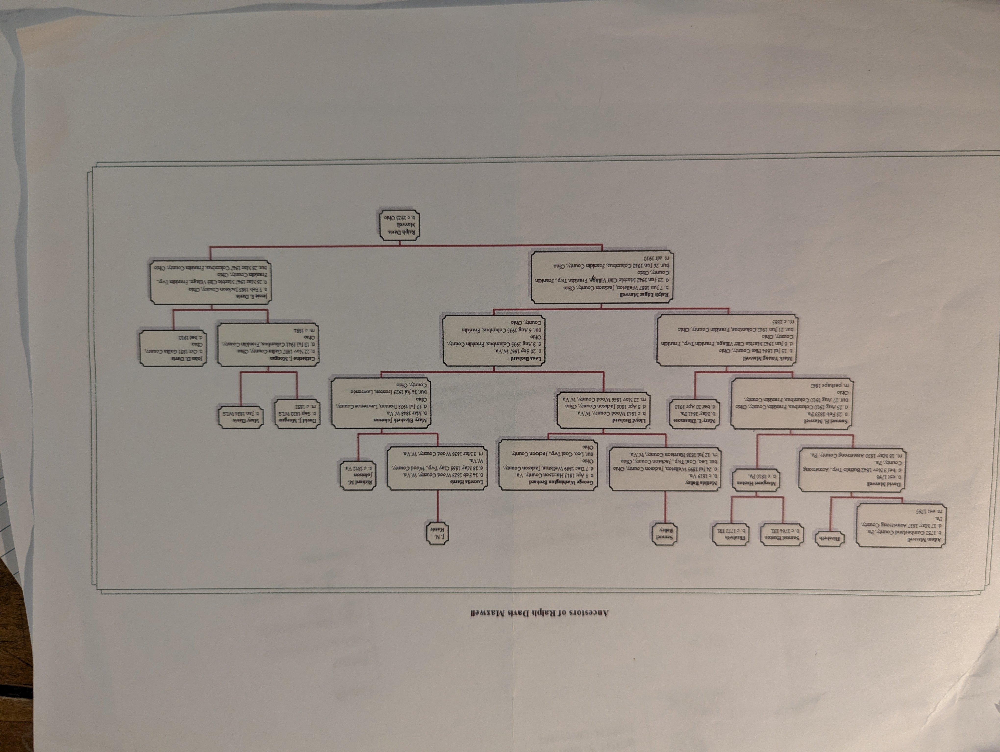
FT-1Ancestors of Ralph Davis Maxwell — Printed Chart ✓
File: 1000003677__1_.jpg
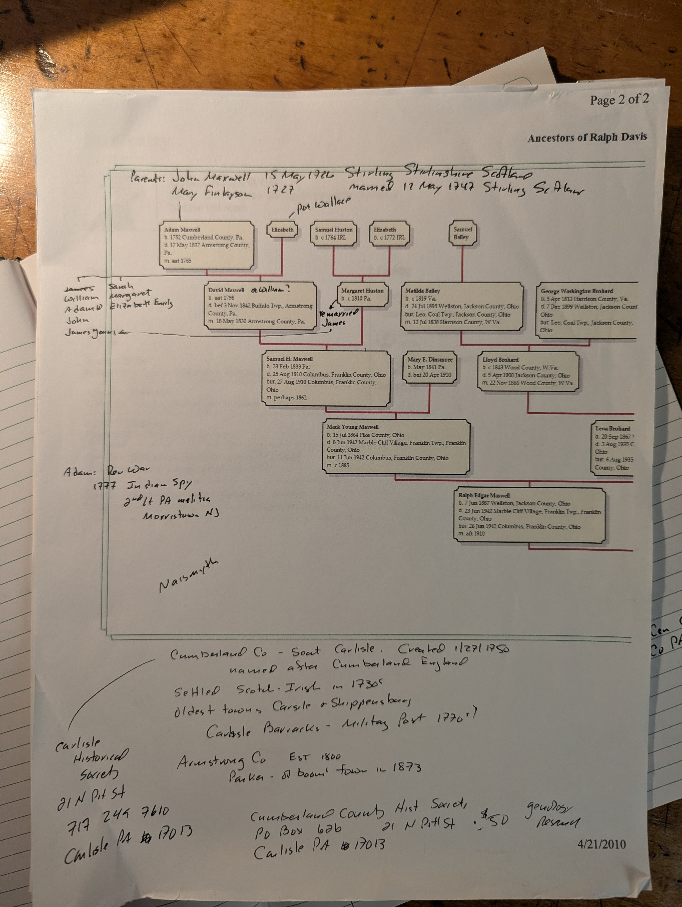
FT-2Ancestors — Page 2 with Handwritten Annotations ✓
File: 1000003675.jpg · Dated 4/21/2010
Records Adam's Revolutionary War service: Indian Spy, 2nd PA Militia, Morristown NJ. Annotated by David B. Maxwell.
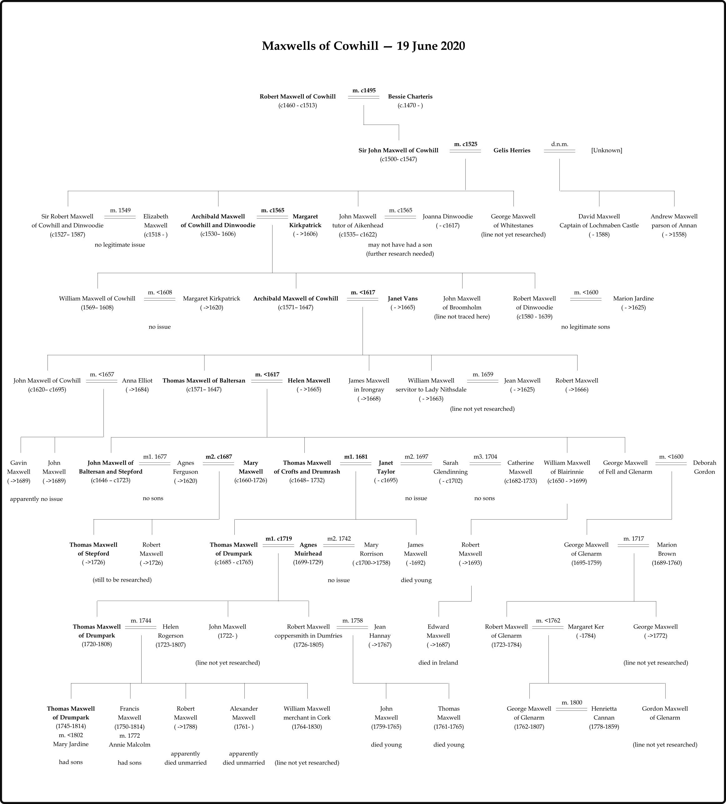
FT-3Maxwells of Cowhill Chart — 19 June 2020 Context
File: Maxwells_of_Cowhill_Chart.pdf · Published 19 June 2020
Documents the main Cowhill cadet branch from Robert Maxwell of Cowhill (c1460). Confirms Sir John Maxwell of Cowhill (c1500–1547) as son of Robert. The chart does not show the Auchincairn branch — James Maxwell of Auchincairn (Sir John's brother) is not represented, consistent with it being a collateral line outside the main Cowhill descent.
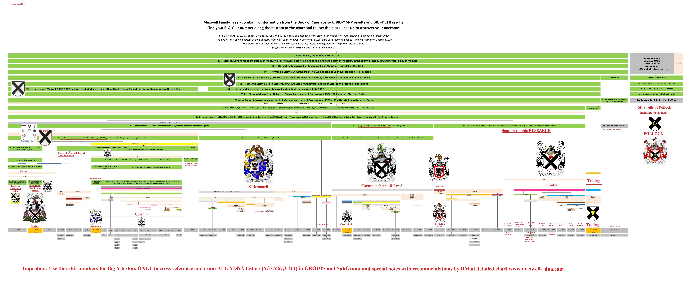
FT-4 ⭐Maxwell BIG-Y SNP Family Tree Chart ✓ ⭐
File: BigYresultsLordMaxwelljan2025__1_.jpg · maxwell-dna.com, version Jan 2025
Don Maxwell's Group 6.48 Chart — Auchincairn Placement ✓ ⭐
Provided by Dr. Donald Maxwell · May 2026 · Two views of the same chart
The chart shows three distinct groups: (1) Broomholm (far left) — under BY24084 → Archibald IV → John first of Broomholm; (2) Cowhill cluster (middle) — under BY24084 → various Cowhill descendants; (3) Auchincairn (far right, kit 752085) — under FTA17177 only, no BY24084. The Broomholm and Cowhill coats of arms appear in their respective clusters; kit 752085 stands alone.
Note on names: Don's email predicts the line runs through "Edwards minor sons Alexander and Edward." The actual wardship clause in WILL-0 (p.695) names William and Alexander, not Edward. Don's DNA placement is unaffected by this — kit 752085 is still on the Auchincairn branch — but the prose prediction misstates the names. The correct minor sons are William and Alexander Maxwell.
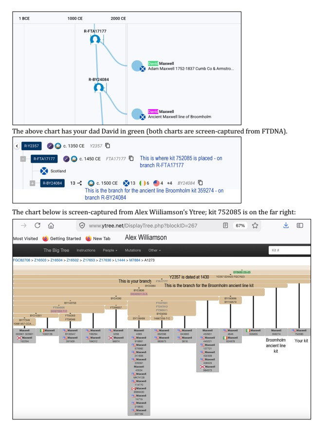
DNA-2 ⭐Jennifer Maxwell — FTDNA & Ytree Annotated Charts — May 2026 ✓ ⭐
Provided by Dr. Jennifer Maxwell · May 2026 · Screen captures from FTDNA and Alex Williamson's Ytree.net
Kit 752085 is the rightmost kit on both the FTDNA haplotree and the Ytree chart. BigY already completed — David Maxwell is on both platforms. No upgrade needed.
Jennifer's email: "The Broomholm kit is a proven lineage (he can trace his line back without any missing generations). You and your dad have the Y2357 SNP and then the Broomholm kit branches off from your branch (FTA17177) after your and your dad share it with him."
Book of Caerlaverock — Cowhill & Barncleuch Pages ✓
Fraser, 1873 · pp.594–595 and pp.602–603
Testament of Archibald Maxwell of Cowhill, 1607 ✓ ⭐
Edinburgh Commissary Court · CC8/8/43, pages 692–697 · Registered 1607
Transcript (p.695, ll.28–29): "J lave to him the waird[is] and mariages of w[ilia]m and allex[ande]r maxwell[is] Law[fu]ll sones To vmq[uhi]ll edward maxwell of auchincairne."
Edward of Auchincairn: widow named as Rosina Wallace (p.695, l.33). Lands listed: Auchincairne, Quhytstanes (Whytestanes), and Bukrig. A debt entry names "John Johnstoun, younger, of Quhytstanes" — suggesting the Whytestanes land was tenanted by a Johnstone at his death. Death date tightened to between 29 June 1604 (contract with Rosina Wallace recorded) and 22 August 1605 (will written).
Note on Don's prediction: Don's email states "Edwards minor sons Alexander and Edward." The actual will names William and Alexander — not Edward. Don's DNA placement of kit 752085 on the Auchincairn branch is independent of this detail and unaffected; only the prose description needed correction.
Note on two Edwards: Archibald's own son Edward (500 merks legacy, p.696) is an entirely different person from Edward Maxwell of Auchincairn. The document distinguishes them clearly; this page does too.
Date discrepancy in the original: The testament header (p.692) implies it was given up on 22 August 1606, but the latter-will section (p.697, l.23) clearly dates the writing to 22 August 1605. The testament was most likely written in August 1605 by Archibald (who died September 1606) and confirmed in the Commissary Court in 1607 — the header date is probably a scribal error in the original.
Testament of Alexander Maxwell, Towbill-hill, Kirkmahoe — 1626 ✓ ⭐
Dumfries Commissary Court · CC5/6/1 · Images 183–184 · Confirmed 22 May 1626
Significance: Alexander Maxwell died in Kirkmahoe parish — immediately adjacent to both Dumfries town and Holywood parish — roughly 19 years after Archibald's 1606 will. His son John Maxwell born ~1610–1620 would be the right age to be the father of John of Barfill (~b.1654). The modest farming estate is consistent with the social standing of Archibald's ward.
Note on indexing: ScotlandsPeople indexes this as "in Corbellie" — a misread of "Towbill-hill" in the original hand. The document is authoritative.
Testament of Edward Maxwell of Isle, Caerlaverock — 1638 ✓ ⭐
Dumfries Commissary Court · CC5/6/2 · Images 23–25 · Will made 9 May 1630 · Died July 1637 · Confirmed 23 May 1638
Witnesses to the 1630 will: Edward Maxwell of Lamingtoun (a known figure linked to the Newlaw/Balmangan/Breoch Maxwell networks) and William Maxwell. The presence of a William Maxwell as witness is a small but real datum: if this is William Maxwell, son of Edward of Auchincairn (co-ward with Alexander in WILL-0), it would place him in the same Kirkcudbright/Dumfriesshire social circle as Edward of Isle in 1630 — though the identification cannot be confirmed without further evidence.
Significance: Edward Maxwell of Isle, dying 1637 in Caerlaverock parish (south of Dumfries), is consistent with being one of the Auchincairn minor sons from the 1606 will. His son John Maxwell (already named as heir in 1630 when the will was made, so born by ~1615) is a second candidate to be the father of John of Barfill. The Nithsdale tenancy connection is notable given that Nithsdale Maxwell figures appear in contemporaneous Dumfries OPR records.
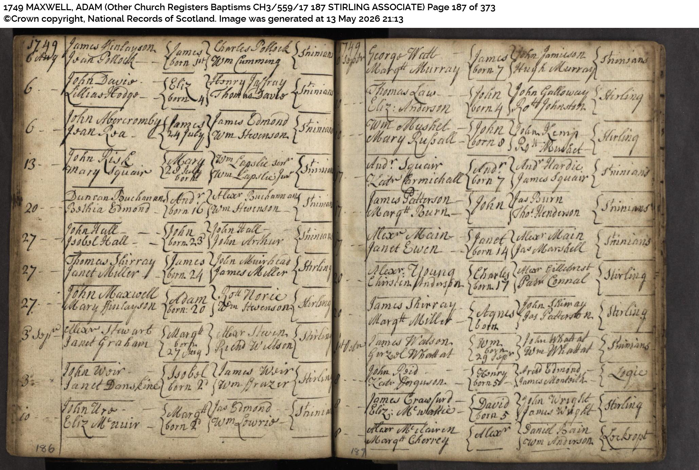
OPR-B0 ⭐Adam Maxwell Baptism — Stirling Associate Congregation, 1749 ✓ ⭐
CH3/559/17, page 187 · Stirling Associate Congregation · Image generated 13 May 2026
Adam Maxwell born 20 August 1749, baptized 27 August 1749, Stirling. Father: John Maxwell. Mother: Mary Finlayson.
Siblings in same register: John (1748), Margret (1751), Bolkrak/Barbara (1753), Daniel (1756), Katharine (1760).
⚠ FamilySearch error: Indexed as "Erskine, Renfrewshire" — wrong. The Stirling Associate church was founded in Stirling by Rev. Ebenezer Erskine in 1733.
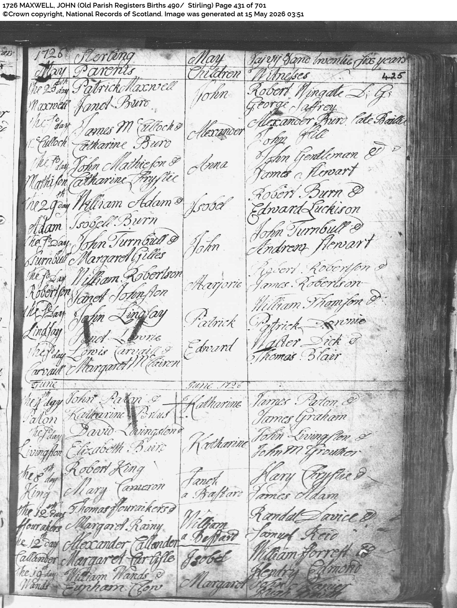
OPR-B1John Maxwell Baptism — Stirling, 1726 ✓
OPR 490 (Stirling) · Page 425 · Reference 20/431
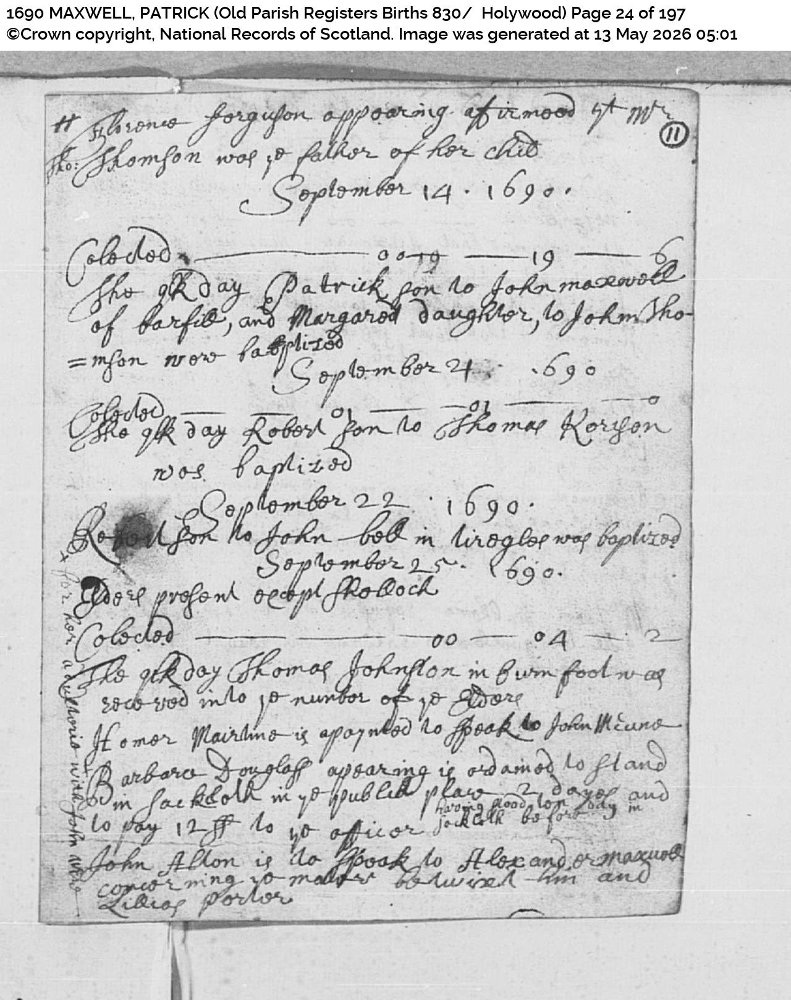
OPR-B2 ⭐Patrick Maxwell Baptism — Holywood, 1690 ✓ ⭐
OPR 830 (Holywood) · Page 24 · Reference 10/24 · Image generated 13 May 2026
Witnesses: Robert Wingate D.G. and George Jaffrey. The "of Barfill" designation = tenant at Barshill farm, Holywood parish. "Barfie" is a palaeographic misreading of "Barſill" — see Key Clarifications.
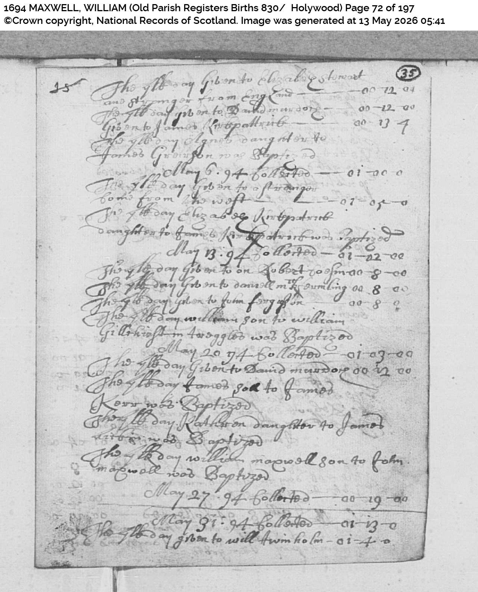
OPR-B3William Maxwell Baptism — Holywood, 1694 ✓
OPR 830 (Holywood) · Page 72 · Reference 10/72
Confirms Patrick's sibling; confirms John Maxwell of Barfill was still in Holywood in 1694.
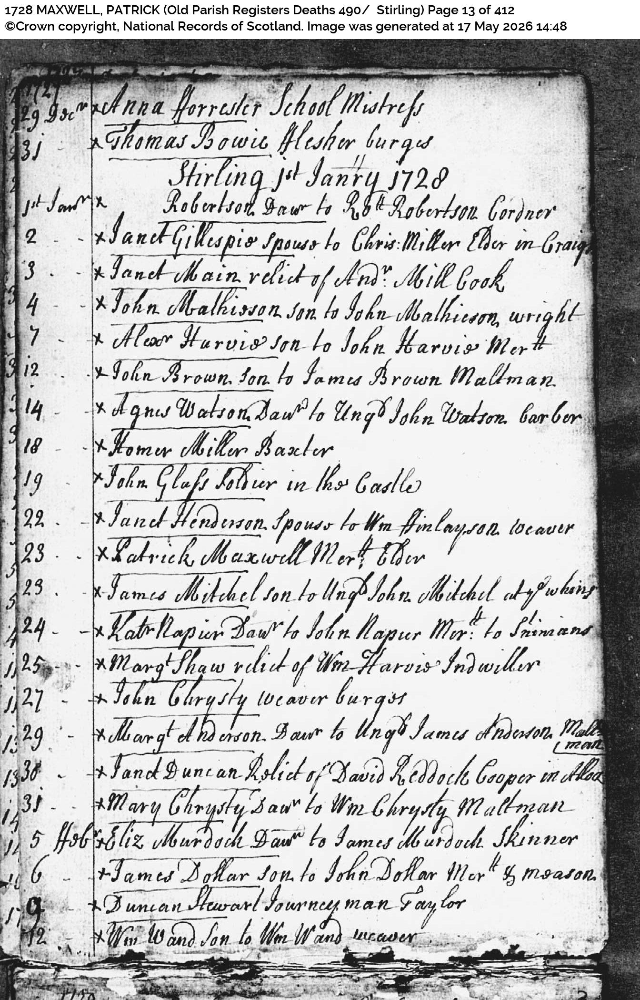
OPR-D1 ⭐Patrick Maxwell Death — Stirling, 23 January 1728 ✓ ⭐
OPR 490 (Stirling) · Deaths · Page 13 · Reference 50/13 · Image generated 17 May 2026
Significance: Confirms Patrick's presence in Stirling and gives his death date — less than two years after his son John's baptism there in May 1726 (OPR-B1). Patrick had established himself as a merchant and session elder in Stirling, a step up socially from the farming tenants at Barfill. This record closes the bracket on Patrick's life: born in Holywood 1690, died in Stirling 1728.
The "Elder" designation indicates Patrick held a formal position in the Stirling church session — consistent with the family moving from the Associate congregation (where son John's children were baptised) or the established Kirk.
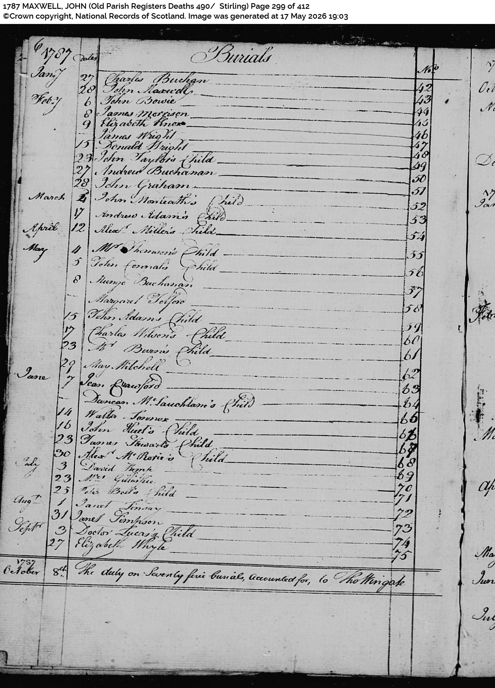
OPR-D2John Maxwell Burial — Stirling, January 1787 ✓
OPR 490 (Stirling) · Deaths · Page 299 · Reference 50/299 · Image generated 17 May 2026
John Maxwell was born 25 May 1726 in Stirling (OPR-B1) and died in Stirling at approximately age 61, confirming he remained in Stirling throughout his life. His son Adam Maxwell was born there in 1749 (OPR-B0) and would have been ~38 at his father's death. No occupation or title is given in the burial entry, consistent with the plain register style of the period.
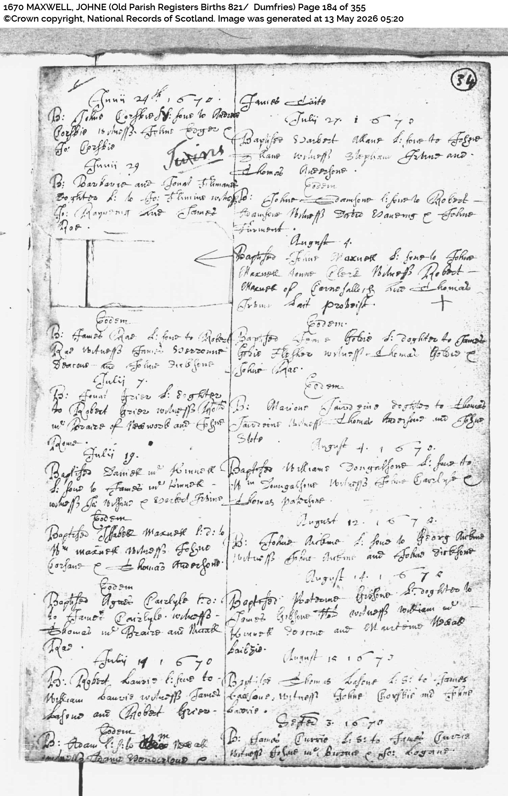
OPR-B4Johne Maxwell Baptism — Dumfries, 1670 Context
OPR 821 (Dumfries) · Page 184 · Reference 10/184 · Image generated 13 May 2026
Robert Maxwell of Carnsalloch as witness is explained by Book of Caerlaverock (p.602): Agnes Irving married Robert as her second husband, placing him in the Dumfries Maxwell social network. This record is contextual — the Jon Maxwell cordiner family is documented here but is not in our proposed direct line.
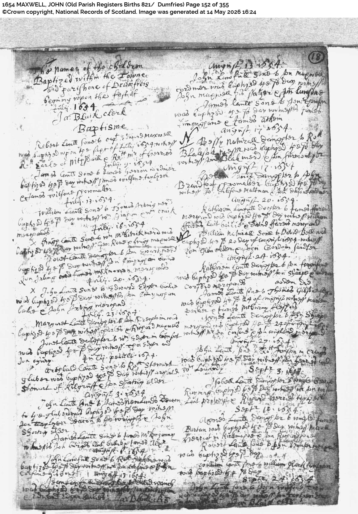
OPR-B5John Maxwell Baptism — Dumfries, 1654 Context
OPR 821 (Dumfries) · Page 152 · Reference 10/152 · Image generated 14 May 2026
A John Maxwell born 13 August 1654 in Dumfries, son of Jon Maxwell cordiner. Previously proposed as = John of Barfill, but this connection is not pursued in the current hypothesis. The Auchincairn line points to John Maxwell (son of Alexander of Kirkmahoe or Edward of Caerlaverock) as the more probable father of John of Barfill. This record is retained for context.
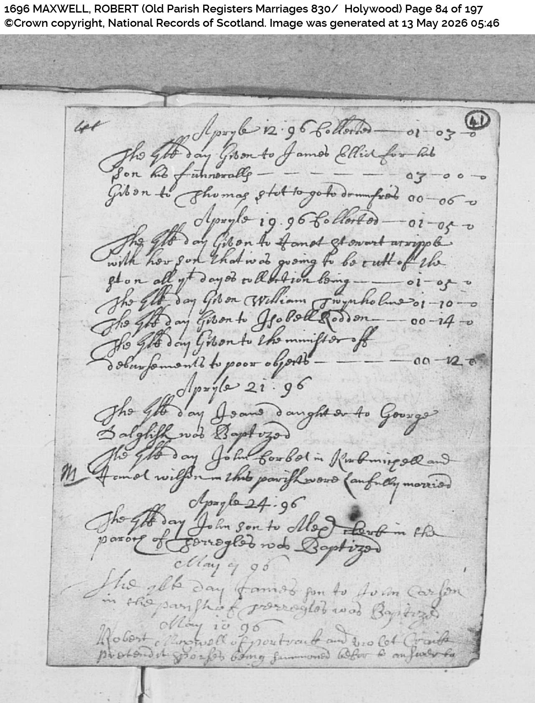
OPR-M1Robert Maxwell of Porttrack & Violet Craik — Holywood, 1696 ✓
OPR 830 (Holywood Marriages) · Page 84
Confirms Porttrack estate active in Holywood parish — Homer Maxwell/Portrack branch. Robert Maxwell of Porttrack and John Maxwell of Barfill were neighbours in the same small parish.
Index to Particular Register of Sasines, Dumfries, 1617–1671 ✓ ⭐
Published index · Pages 192, 259, 271–272
Page 192: John Kirkpatrick held Freircarse 1618–1626. A Maxwell held Freircarse by 1630 (see Dead Ends — Freircarse chain).
Page 259: "Maxwell, [Elizabeth] Stirling, spouse of William, son of Herbert M. of Freircarse — 3 Aug 1647." Confirms Herbert Maxwell of Freircarse had a son William. This is contextual for the Freircarse hypothesis (now in Dead Ends) but also shows the Maxwell network active in Dumfriesshire in the 1640s.
"Maxwell, Elizabeth Scott, spouse of John, of Bromeholme" — John Maxwell of Broomholm active 1647 (son of Archibald d.1606, line "not traced" per FT-3).
These records, found via FamilySearch (indexes) and the published Dumfries & Kirkcudbright Register of Sasines index, document John Maxwell elder and younger of Barfill across three decades. The full deed texts are held at NRS Edinburgh and are the priority targets for closing the remaining gap.
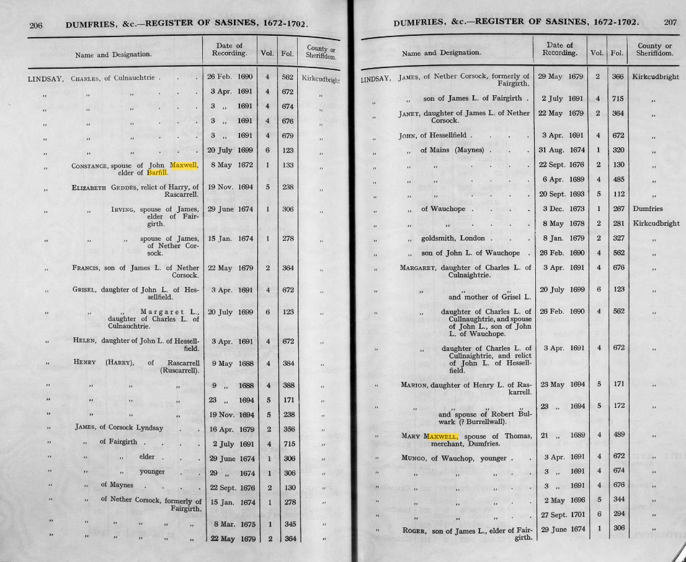
SASE-3 ⭐Lindsay Sasines Index — Constance Lindsay, wife of John Maxwell elder of Barfill ✓ ⭐
Dumfries & Kirkcudbright Register of Sasines 1672–1702 · Published index · Pages 206–207
Constance was a Lindsay who married John Maxwell elder of Barfill. The document (Vol.1, Fol.133) is the same as SASE-2 below — both elder and younger appear in this single sasine. Page 207 also shows: "Mary Maxwell, spouse of Thomas [Lindsay], merchant, Dumfries — 21 May 1689, Vol.4, Fol.489" — possibly a daughter of John elder and Constance, marrying back into the Lindsay family.
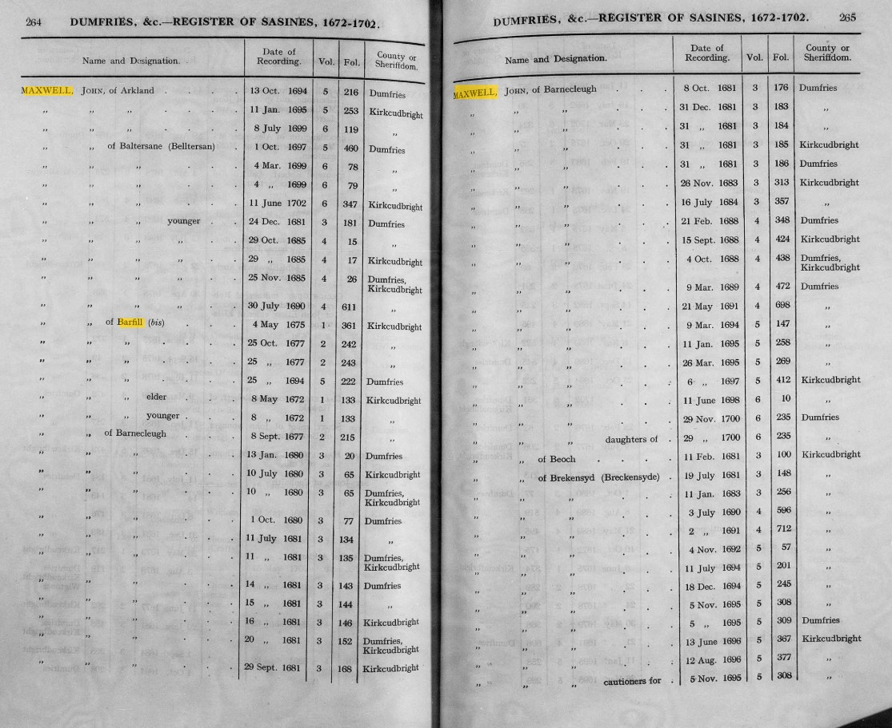
SASE-2 ⭐Maxwell Sasines Index — Complete Barfill Sequence 1672–1694 ✓ ⭐
Dumfries & Kirkcudbright Register of Sasines 1672–1702 · Published index · Pages 264–265
— John, of Barfill, elder · 8 May 1672 · Vol.1, Fol.133 · Kirkcudbright
— John, of Barfill, younger · 8 May 1672 · Vol.1, Fol.133 · Kirkcudbright
Same date, same volume, same folio — both in one document, confirming father-and-son relationship.
— John, of Barfill (bis) · 4 May 1675 · Vol.1, Fol.361 · Kirkcudbright
— John, of Barfill · 25 Oct 1677 · Vol.2, Fols.242–243 · Kirkcudbright
— John, of Barfill · 25 Oct 1694 · Vol.5, Fol.222 · Dumfries (county switches — elder dead by now)
The shift from Kirkcudbright to Dumfries county in 1694 reflects the transition from elder to younger as sole holder. All earlier entries are Kirkcudbright — consistent with the Auchincairn (Kirkcudbrightshire) family origin. Vol.1, Fol.133 (1672) is the most important unread document in the chain.
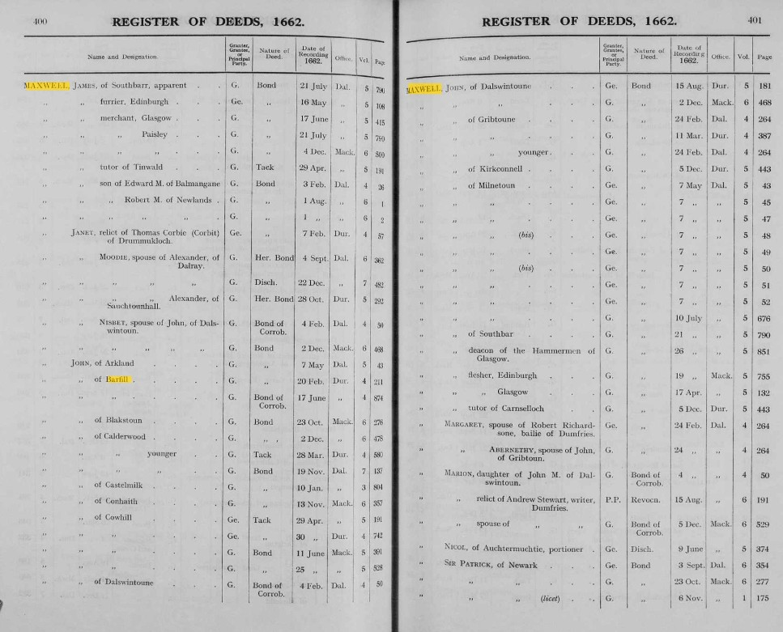
DEED-1 ⭐Register of Deeds 1662 — John of Barfill, Two Bonds ✓ ⭐
Scottish Register of Deeds (Books of Council and Session) · 1662 · FamilySearch index · Pages 400–401
— G., Bond, 20 Feb. 1662, Vol.4, Page 211
— G., Bond of Corroboration, 17 June 1662, Vol.4, Page 874
This is the earliest documentary evidence of John Maxwell at Barfill — at least 1662. A Bond of Corroboration (confirming an existing obligation) suggests prior financial activity there even before 1662. John of Broomholm also appears on this page (Bond, 2 Nov., Vol.12, p.471) — the Broomholm line (BY24084 branch) and Barfill line (FTA17177 branch) are active simultaneously in the same national register.
Also on page 400: "James Maxwell, son of Edward M. of Balmangane" — the Balmangan estate in Kirkcudbrightshire, connected to the Edward Maxwell of Lamingtoun / Newlaw / Balmangan Maxwell network active in the same region.
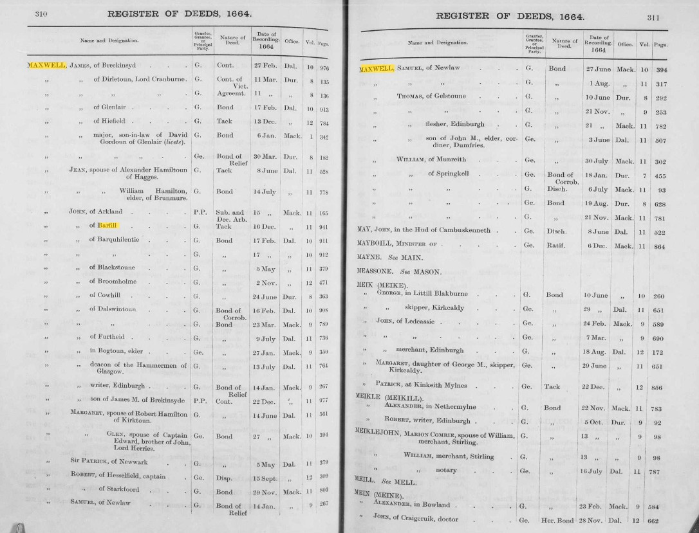
DEED-2 ⭐Register of Deeds 1664 — John of Barfill, Tack (Lease) ✓ ⭐
Scottish Register of Deeds · 1664 · FamilySearch index · Pages 310–311
A Tack is a Scottish lease of land. This may be the original lease of Barfill farm — the document establishing John Maxwell elder as the tenant. The full text (NRS, Books of Council and Session, Vol.11, p.941) could name the landlord who granted the lease and potentially name John elder with a father or origin. This is a priority document for NRS access.
Also on page 311: "[Thomas Maxwell?], son of John M., elder, cordiner, Dumfries" — a different Maxwell family (Dumfries cordiner line), noted for completeness.
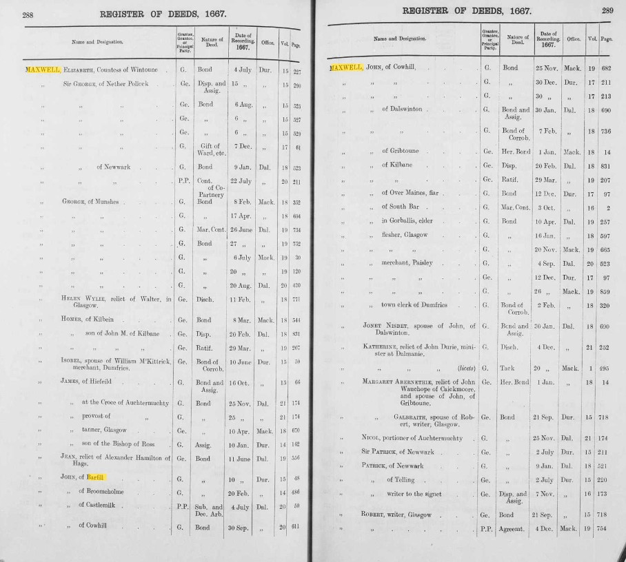
DEED-3Register of Deeds 1667 — John of Barfill, Bond ✓
Scottish Register of Deeds · 1667 · FamilySearch index · Pages 288–289
John Maxwell elder of Barfill (Grantor) entering a bond in the Dalhousie (Dal.) register, 1667. Five years before the 1672 sasine when he first appears explicitly as "elder." John of Broomholm also appears on this page — both lines active simultaneously. Full text at NRS (Books of Council and Session, Dal. series, Vol.15, p.48).
Holywood Parish List, August 1684 — RPCS Third Series, Vol. IX, p.300 ✓ ⭐
Register of the Privy Council of Scotland, Third Series, Vol. IX (June–September 1684), ed. H. Paton · HathiTrust mdp.35112103825610 · Page 300 (section 89)
Other Holywood Maxwells confirmed in this list: Robert Maxwell of Killilung (wife Janett Milligan) · Edward Maxwell of Muligounton · Robert Maxwell of Steelston · Robert Maxwell of Bearcroft · multiple Maxwell wives throughout. Barfill is the only unnamed holding in the complete list.
Farm name confirmation: "Barfill" (RPCS 1684) + "Barshill" (Hearth Tax 1691) + "Barfie" (OPR 1690, misread) all refer to the same farm. Situated between Hulton and Portrack in the parish's geographical sequence.
Maxwell Retours, Dumfriesshire, 1629–1663 Context
Inquisitionum ad Capellam Regis Retornatarum Abbreviatio
6 Mar 1646: Robert Maxwell of Carnsalloch, heir to his father George Maxwell in Carnsalloch — confirms the Carnsalloch Maxwell lineage (Y2357 negative; contextual only).
9 Jun 1656: Agnes Maxwell and Barbara Maxwell, heirs portioner of Robert Maxwell of Dunwoodie — confirms Robert of Dinwoodie left only daughters.
10 Aug 1643: James Maxwell de Innerweek, heir of William Maxwell of Kirkhous (his brother) — contextual for the wider Dumfriesshire Maxwell network.
UNDWIN, father of Maccus (~1070)
└── [~12 Lords of Maxwell — Y2357 SNP chain] ✓ FT-4
└── JOHN MAXWELL, Master of Maxwell (d. Kirtle 22 July 1484)
★ Y2357 SNP CONFIRMED · GD2 from Caerlaverock · Kit 752085 Group 6.48 ✓ FT-4
│
└── ROBERT MAXWELL OF COWHILL (XIV · FTA17177 ~1450 CE) ✓ FT-7 · DNA-1 · DNA-2
│ [FTA17177 = common ancestor of ALL kits on this chart, including Broomholm]
│
├── SIR JOHN MAXWELL OF COWHILL (XV · BY24084 ~1500 CE) ✓ FT-3 [NOT our line]
│ └── Archibald IV → Broomholm, Cowhill, Drumpark etc.
│
└── JAMES MAXWELL OF AUCHINCAIRN (XIV · FTA17177 without BY24084) ✓ DNA-1 · DNA-2
│ [Sir John's brother · BigY confirmed: kit 752085 carries FTA17177, NOT BY24084]
└── EDWARD MAXWELL OF AUCHINCAIRN (d. before 1606) ✓ WILL-0
│ [deceased by 29 Jun 1604–22 Aug 1605; widow Rosina Wallace; lands: Auchincairne, Quhytstanes, Bukrig]
│
├── ALEXANDER MAXWELL, Towbill-hill, Kirkmahoe (d. Nov 1625) ✓ WILL-1a ← PREFERRED
│ ├── JOHN MAXWELL (his son, born ~1610–1625) = John elder of Barfill ✓ WILL-1a
│ └── THOMAS MAXWELL (his other son) — traced to Dumfries, not Barfill see OPR-X1
│
├── WILLIAM MAXWELL (co-ward with Alexander) ● probable — WILL-1c
│ [prob. = William Maxwell at Bankend, Caerlaverock, d.1656]
│ [son: Edward Maxwell, married Dumfries 1671 — line diverges from Barfill]
│ [does NOT lead to John elder of Barfill — Alexander is the Barfill ancestor]
│
└── EDWARD MAXWELL OF ISLE, Caerlaverock (d. Jul 1637) ✓ WILL-1b
[not named in wardship clause; possible adult son or unrelated]
└── JOHN MAXWELL (his eldest son) ✓ WILL-1b
↕ ══ THE GAP ══ one step · no document names John elder's father ══ ↕
[John elder ~37–47 in 1662 · Alexander's son ~37–47 in 1662 · perfect match]
[Kirkcudbright county on all 1662–1677 Barfill deeds = Auchincairn geographic link]
JOHN MAXWELL ELDER of Barfill · wife: Constance Lindsay ✓ DEED-1 · DEED-2 · DEED-3 · SASE-2 · SASE-3
[Active: 1662 (bonds) → 1664 (Tack) → 1667 (bond) → 1672 (with younger) → 1677]
[Farm name = Barshill: OPR clerk misread ſ as f → "Barfie"]
[1684 RPCS: "Ab. Barfill" — residents absent, unnamed — RPCS-1]
└── JOHN MAXWELL YOUNGER of Barfill · wife: Margaret dau. of John Thomson ✓ SASE-2 · OPR-B2
[confirmed in same 1672 sasine as elder · father of Patrick 1690]
[1694 sasine, Dumfries county — elder dead by this time]
└── PATRICK MAXWELL (b.14 Sep 1690, Holywood · d.23 Jan 1728, Stirling) ✓ OPR-B2 · OPR-D1
[Merchant and church elder in Stirling]
└── JOHN MAXWELL (b.25 May 1726, Stirling · d.~28 Jan 1787, Stirling) ✓ OPR-B1 · OPR-D2
└── ADAM MAXWELL (b.20 Aug 1749, Stirling) ✓ OPR-B0
└── DAVID MAXWELL (~1798) ✓ FT-1
└── SAMUEL H. MAXWELL (b.1833) ✓ FT-1
└── MACK YOUNG MAXWELL (b.1864) ✓ FT-1
└── RALPH EDGAR MAXWELL (b.1887) ✓ FT-1
└── RALPH DAVIS MAXWELL (~1925) ✓ FT-1
└── DAVID B. MAXWELL [Kit 752085] ✓
└── JAMES D. MAXWELL ✓
Legend: ✓ = confirmed · ● = DNA evidence · ══ GAP ══ = no documentary bridge
One step · no document names John elder's father · ages entirely consistent · Kirkcudbright county links both sides.
The two documents most likely to close this gap are at NRS Edinburgh: (1) Register of Deeds, Vol.11, p.941 — the 1664 Tack, possibly the original Barfill farm lease, which may name John elder's origin; (2) Dumfries Sasines, Vol.1, Fol.133 — the 1672 document containing John elder, John younger, and Constance Lindsay together, which may give fuller designations for both men.
The following hypotheses were pursued and then superseded. They are retained here as a research record — the source documents remain relevant to the broader Maxwell landscape.
P.H. McKerlie's History of the Lands and Their Owners in Galloway (1877), p.342, identifies Maxwells at Meikle and Little Barfill in Kirkcudbrightshire and proposes: (1) John Maxwell, senior, of Barfill (presumed, pre-1646); (2) his son John Maxwell who married Elizabeth Hairstanes on 29 July 1646 — evidenced by Elizabeth's sasine of Meikle and Little Barfill in May 1665; (3) John Maxwell, junior, who married Margaret Maxwell, per a sasine of April 1688. This appeared to offer an earlier Maxwell-of-Barfill generation narrowing the gap between Alexander Maxwell's son John (b.~1610–1625) and John Maxwell elder of Barfill (first documented 1662).
The hypothesis is disqualified by the 1675 testament dative of John Sharpe, late bailie of Dumfries (CC5/6/5, image 219), which names Elizabeth Hairstanes as Sharpe's relict — she was Sharpe's wife, not a Maxwell's. Corroborated by The Douglas Book (pp.312–313), which independently records John Sharpe of Kirkconnell married Elizabeth Hairstanes in 1646. McKerlie compounded two errors: he linked the documented 1646 Sharpe–Hairstanes marriage to Elizabeth's 1665 Barfill sasine, then inferred a "John Maxwell, senior, we presume" with no independent attestation. The Kirkcudbrightshire Meikle and Little Barfill (Kirkpatrick Durham parish) is Hairstanes/Sharpe property — distinct from the Holywood Barshill at which the Maxwell line was seated. The Kirkcudbright county designation on the 1662–1677 Maxwell sasines is therefore explained by Kirkcudbright lands referenced in the transactions, not by Barfill itself being in Kirkcudbrightshire.
Sharpe Testament & McKerlie Barfill — Disqualifying Sources ✗ Refuted
(1) McKerlie, Lands and Owners in Galloway, 1877, p.342 · (2) The Douglas Book, "Notes upon the Ancestry of Annie Laurie," pp.312–313 · (3) Testament dative of John Sharpe · CC5/6/5 · Image 219 · 12 Aug 1675
Major debtors in Sharpe's testament include Robert Maxwell of Tinwald (deceased) and Sir Robert Grierson of Lagg (the "Bluidy Lag" of the Killing Time) — useful collateral context for the Dumfries gentry network of the 1670s, but no part of the Sharpe line is in the direct ancestry of kit 752085.
Earlier research proposed the line ran: Archibald of Cowhill (d.1606) → John Maxwell (son, £500 legacy) → John Maxwell of Freircarse (d.1630, Dunscore) → Herbert Maxwell of Freircarse → Jon Maxwell cordiner (Dumfries) → John Maxwell (b.1654) → John of Barfill. Don's chart shows kit 752085 branching at the level of Sir John's brother, not Sir John's grandson — one generation earlier than this chain assumed. Additionally, every link was unconfirmed by documents. The chain is abandoned.
Carnsalloch testament misidentification: The testament in CC5/6/1 confirmed 31 August 1630 (images 476–478) was cited as proof of "John Maxwell of Freircarse." On careful reading it is "Johnne Maxwell in Carnsalloch within the parochin of Kirkmahoe" — a different man in a different parish. The genuine Freircarse testament exists separately in CC5/6/1 (indexed as "of Freircars, parish of Dunscoir") but was not re-read following the DNA reorientation.
Testament of John Maxwell in Carnsalloch, Kirkmahoe — 1630 ✗ Misidentified
Dumfries Commissary Court · CC5/6/1 · Images 476–478 · Confirmed 31 August 1630
Eldest son John Maxwell acted as executor; sons Robert (300 merks) and a daughter (300 merks); tutors named as "my mother and my brother." Witnesses include Edward Maxwell of [unclear]. Previously misidentified as the Freircarse testament.
Testament of Charles Maxwell alias Murray of Cowhill, 1725 Context
Dumfries Commissary Court · CC5/6/9 · Confirmed 1725
Charles Maxwell (alias Murray) of Cowhill, d.1725. Confirms the Cowhill estate passed through the Murray alias Maxwell line after John of Cowhill had only daughters — the main Cowhill male line was extinct by the early 18th century, consistent with kit 752085 deriving from the collateral Auchincairn branch.
Jon Maxwell cordiner, active in Dumfries OPR 821 (children 1654–1676, see OPR-B4 and OPR-B5 in the main source section), was proposed as the father of John Maxwell of Barfill. The John Maxwell baptized 13 August 1654 (OPR-B5) was proposed as = John of Barfill. These links were always conjectural and are not pursued in the current hypothesis. The cordiner family is documented in Dumfries records but is not connected to the Auchincairn branch by any document, and the Auchincairn branch (through Alexander Maxwell of Kirkmahoe) provides a more grounded path to Barfill.
Alexander Maxwell's will (WILL-1a, 1626) names two sons: John and Thomas. Thomas was considered as a possible intermediate generation between Alexander and John elder of Barfill. A Thomas Maxwell fathered a son Thomas in Dumfries in September 1644 (OPR-X1 below) — if this is Alexander's son Thomas, his line runs into Dumfries town rather than toward Holywood. Combined with William Maxwell's line also diverging to Dumfries (see below), both of Alexander's other sons appear accounted for in Dumfries, leaving John (Alexander's remaining son) as the sole viable path to Barfill. Thomas as an intermediate generation is not pursued further.
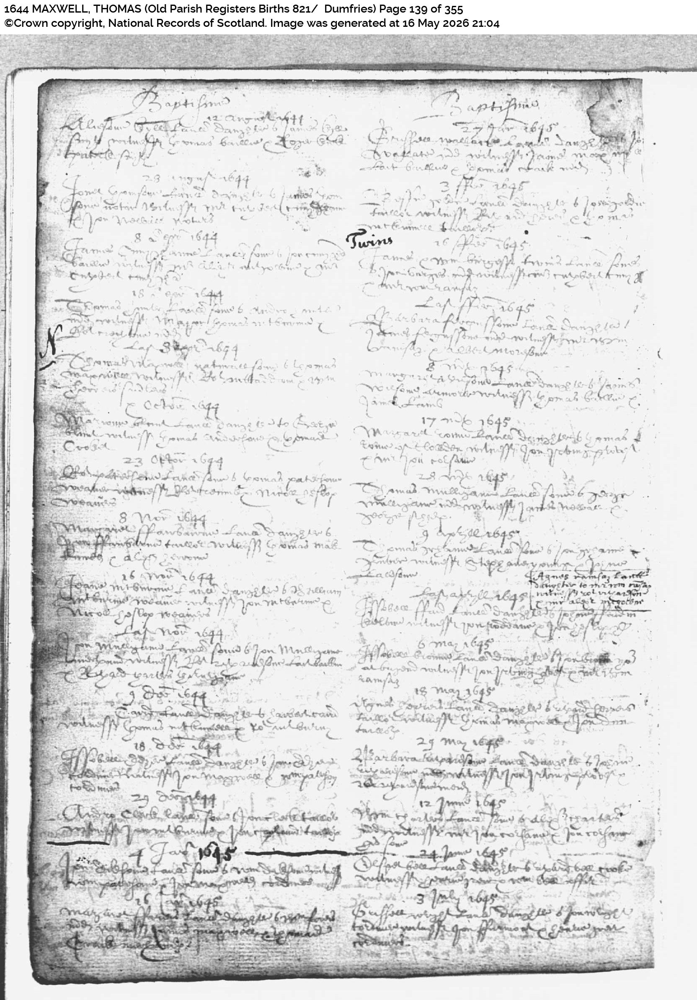
OPR-X1Thomas Maxwell — Baptism of Son Thomas, Dumfries, 30 September 1644 Collateral branch
OPR 821 (Dumfries) · Page 139 · Reference 10/139
If this is Alexander's son Thomas (born ~1612–1622), he would be ~22–32 in 1644 — the right age — and his line runs into Dumfries town naming children Thomas, not John. The farm designation is unreadable; the identification is probable but unconfirmed.
William Maxwell was one of the two minor sons of Edward of Auchincairn named in Archibald of Cowhill's 1606 will (WILL-0), alongside Alexander. He is probably William Maxwell at Bankend, Caerlaverock (d.1656, CC5/6/3), whose sole heir was his son Edward Maxwell. Edward married Margaret Minise in Dumfries in 1671 — placing the Bankend line firmly in Dumfries town, nine years after John Maxwell elder was already established at Barfill in Holywood. William's line is accounted for and diverges from the Barfill chain entirely.
Testament of William Maxwell at Bankend — 1656 ● Probable collateral branch
Dumfries Commissary Court · CC5/6/3 · Images 36–37 · Confirmed 21 August 1656 · Testament Dative
Personal estate modest (~£36); debts owed to William totalled ~£344 from thirteen people across south Dumfriesshire farms, including "Gibby Dicksone in Islle" (£24) — Isle farm, Caerlaverock, where Edward Maxwell of Isle held his tack (WILL-1b). Places William in the same Caerlaverock financial network.
Edward Maxwell — Marriage to Margaret Minise, Dumfries, 1671/1673 Collateral branch
OPR 821 (Dumfries) · 25 May 1671 (ref 40/97) and 28 Jan 1673 (ref 40/99)
John Maxwell elder of Barfill was already at Barfill in 1662 — nine years before this marriage. Edward Maxwell and John elder are confirmed as separate contemporaries. William's line diverges permanently from the Barfill line here.